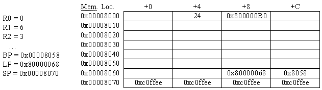

Stacks and procedures
Problem 1.

Consider the following implementation of an algorithm for
finding the greatest common divisor of two integers:
int gcd(int a,int b) {
if (a == b) return a;
if (a > b) return gcd(a-b,b);
return gcd(a,b-a);
}
The C compiler has compiled this procedure into the following code
for an unpipelined Beta processor:
gcd:
PUSH (LP)
PUSH (BP)
MOVE (SP, BP)
PUSH (R1)
PUSH (R2)
LD (BP, -12, R0)
LD (BP, -16, R1)
CMPEQ (R0, R1, R2)
BT (R2, L1)
CMPLE (R0, R1, R2)
BT (R2, L2)
PUSH (R1)
SUB (R0, R1, R2)
PUSH (R2)
BR (gcd, LP)
DEALLOCATE (2)
BR (L1)
L2:
SUB (R1, R0, R2)
PUSH (R2)
PUSH (R0)
BR (gcd, LP)
DEALLOCATE (2)
L1:
POP (R2)
POP (R1)
MOVE (BP, SP)
POP (BP)
POP (LP)
JMP (LP)
-
The program above contains the instruction LD(BP,-16,R1).
Explain what the compiler was trying to do when in generated
this instruction.
-
What are the contents of the memory location holding the
instruction BR(L1)?
-
When the instruction labeled "L1" is executed, what is the
best characterization of the contents of R0?
-
Looking at the code, a student suggests that both DEALLOCATE
instructions could be eliminated since deallocation is performed
implicitly by the MOVE(BP,SP) instruction in the exit sequence. After
calling gcd, would it be possible to tell if the DEALLOCATE
instructions had been removed?
-
How many words of stack are needed to execute gcd(24,16)?
Don't forget to include the stack space occupied by the arguments in
the initial call.
-
During execution of gcd(28,70), the Beta processor is halted and
the contents of portions of the stack are found to contain the
following:
???
0x00000594
0x00001234
0x00000046
0x0000002A
0x0000000E
0x0000001C
0x00000594
0x0000124C
BP-->0x0000002A
0x0000000E
SP-->0x00001254
0x0000000E
What is the value of the second argument ("b") to the current call to gcd?
-
What is the value in the BP register at the time the stack snapshot
was taken?
-
What is the correct value for "???" above?
-
What is the address of the POP(R2) instruction?
-
At the time the stack snapshot was taken, what is the
significance of the value 0x1254 in the location at <SP>?
-
The stack snapshot was taken just after the execution of a
particular instruction. Could the snapshot have been taken just after
the execution of the PUSH(R1) instruction near the beginning of the
gcd procedure?
Problem 2.
Consider the following function written in Beta assembly language:
foo: PUSH (LP)
PUSH (BP)
MOVE (SP, BP)
PUSH (R1)
LD (BP, -12, R1)
B1: BNE (R1, cmp, R31)
B2: BR (rtn)
loop: SHLC (R1, 1, R1)
cmp: CMPLT (R1, R31, R0)
BF (R0, loop)
rtn: MOVE (R1, R0)
POP (R1)
POP (BP)
POP (LP)
JMP (LP)
-
What are the contents of the memory location labeled B1?
-
If the branch instruction at the location labeled B2 is
replaced with a NOP, characterize the input arguments that will
cause foo to loop indefinitely.
-
How many times will the instruction labeled loop be executed
when foo is called as follows:
CMOVE (1024, R0)
PUSH (R0)
CMOVE (-256, R0)
PUSH (R0)
BR (foo, LP)
DEALLOCATE (2)
-
Which of the following instructions could replace the instruction at
the memory location labeled cmp without changing the behavior of the
function?
a) CMPLTC (R1, 0, R0)
b) CMPLEC (R1, -1, R0)
c) SRAC (R1, 31, R0)
d) SHRC (R1, 31, R0)
e) All of the above
f) None of the above
-
Describe the behavior of the function foo if the instruction
POP (LP) is replaced with DEALLOCATE (1).
-
Suppose that function foo begins execution, and is subsequently
interrupted, and the following indications of the processor's state
are observed:
R0 = 0 Mem[0x1000] = 0x00001024
R1 = 0xbba00000 Mem[0x1004] = 0x000000e0
Mem[0x1008] = 0x00000001
Mem[0x100c] = 0x800000cc
. Mem[0x1010] = 0x00001004
. Mem[0x1014] = 0x00001000
. Mem[0x1018] = 0x00001774
Mem[0x101c] = 0x80000084
Mem[0x1020] = 0x00001014
BP = 0x00001024 Mem[0x1024] = 0x00001000
LP = 0x80000084 Mem[0x1028] = 0xafadcafe
SP = 0x00001028 Mem[0x102c] = 0xabadcafe
What is the value of the label foo?
-
What argument was the function foo called with in this instance?
-
Assuming that foo was itself called from some other function,
what was the first argument to that function?
Problem 3.
Consider yet another C function for computing the greatest common
denominator between two numbers, x and y:
int gcd(int x, int y)
{
if (x == y) return x;
if (y > x)
y = y - x;
else
x = x - y;
return gcd(x, y);
}
It compiles into the following Beta code:
gcd: PUSH (LP)
PUSH (BP)
MOVE (SP, BP)
PUSH (R1)
PUSH (R2)
LD (BP, -12, R1)
LD (BP, -16, R2)
CMPEQ (R2, R1, R0)
BF (R0, ifxgty)
MOVE (R1, R0)
BR (done)
ifxgty: CMPLE (R2, R1, R0)
BT (R0, else)
SUB (R2, R1, R2)
BR (call)
else: SUB (R1, R2, R1)
call: PUSH (R2)
PUSH (R1)
BR (gcd, LP)
DEALLOCATE (2)
done: POP (R2)
POP (R1)
POP (BP)
POP (LP)
JMP (LP)
Assume the function gcd is called with two positive non-zero arguments
while the stack pointer set to 0x8000 (i.e. it's two arguments are
placed in 0x8000, and 0x8004). Sometime thereafter, the Beta is
stopped and the contents of various memory locations and registers are
examined. Here is a summary of what is seen:

The contents of the blank table entries are unknown.
-
Fill in as many blank spaces as possible in the table above and
indicate those locations whose contents cannot be determined from the
supplied information.
-
Using the information supplied, determine what is the address of the
entry point of gcd? What initial arguments was it called with? What
value would this particular call have returned if it had been allowed
to complete?
-
Which instruction was about to be executed when the machine was stopped?
-
If the machine was restarted in the same state as when it was stopped,
how many more times would gcd have been called? Given the particular
call to gcd whose state is summarized above, what is the greatest
value that the stack pointer register (SP) will take on during the
execution of this call.
-
Suppose gcd is called with two non-zero positive arguments, x and
y. What is the maximum depth that the stack can grow? Give your answer
in terms of x and y.
Problem 4.
Consider the following C function, which compiles to the Beta
assembly code shown to the right:
int fib(int n)
{
if (n < 2) return n;
return fib(n-1) + fib(n-2);
}
|
fib: PUSH (LP) | Entry.1
PUSH (BP) | Entry.2
MOVE (SP, BP) | Entry.3
PUSH (R1) | Entry.4
PUSH (R2) | Entry.5
LD (BP, -12, R2)
CMPLEC (R2, 1, R0)
BT (R0, L2)
SUBC (R2, 1, R0)
PUSH (R0) | Code.1
BR (fib, LP) | Code.2
DEALLOCATE (1) | Code.3
MOVE (R0, R1) | Code.4
SUBC (R2, 2, R0) | Code.5
PUSH (R0) | Code.6
BR (fib, LP) | Code.7
DEALLOCATE (1) | Code.8
ADD (R1, R0, R0)
BR (L3)
L2: MOVE (R2, R0)
L3: POP (R2) | Return.1
POP (R1) | Return.2
POP (BP) | Return.3
POP (LP) | Return.4
JMP (LP) | Return.5
|
-
How many memory locations are allocated on the stack for each call
to fib?
-
Consider the following code substitution for the series of
instructions labeled Entry.[1-5] in fib:
fib: ALLOCATE (4)
ST (LP, -16, SP)
ST (BP, -12, SP)
ST (R1, -8, SP)
ST (R2, -4, SP)
ADDC (SP, -8, BP)
Does the new code fragment perform the same function as the block
that it replaces? Does it require more or fewer Beta instructions? Is
the given sequence safe (could it be interrupted at any point and
still operate correctly)? What are the advantages and disadvantages of
this substitution?
-
Which of the following three Beta assembly code fragments could
transparently replace the series of instructions labeled Return.[1-5]?
L3: LD (SP, -16, LP)
LD (SP, -12, BP)
LD (SP, -8, R1)
LD (SP, -4, R2)
DEALLOCATE (4)
JMP (LP)
|
L3: DEALLOCATE (4)
LD (SP, 12, R2)
LD (SP, 8, R1)
LD (SP, 4, BP)
LD (SP, 0, LP)
JMP (LP)
|
L3: LD (SP, -4, R2)
LD (SP, -8, R1)
LD (SP, -12, BP)
LD (SP, -16, LP)
DEALLOCATE (4)
JMP (LP)
|
-
How do these versions compare to the original in terms of the
number of instructions used? Are there any other advantages or
disadvantages of these substitutions?
-
Suppose the following code was substituted for the assembly language block labeled Code.[1-8]:
PUSH (R0)
BR (fib, LP)
MOVE (R0, R1)
SUBC (R2, 2, R0)
ST (R0, -4, SP)
BR (fib, LP)
DEALLOCATE (1)
Is this resulting code faster? Safe?
Problem 5.
-
Using our procedure linkage convention, how far (in terms of
addresses) can a callee be from its caller? What parts of our
convention are impacted by this limitation (the calling sequence, the
entry sequence, or the return sequence)? How might our convention be
extended to allow for calls to more distant procedures?
-
Our current calling convention requires all addresses to be
resolved at compile time. Suppose that we would like to be able to
call special libraries of functions whose addresses are unknown until
the program is loaded into memory. How could we modify our procedure
linkage convention to accommodate this capability?
Problem 6.
-
Which of the following Beta assembly language macros can always be
used for loading the Nth argument passed to a function using our
standard procedure linkage convention. Assume argument 1 is the first
argument and no more than 2048 arguments are passed.
- .macro ARG(N, RC) LD(SP, -8 - 4*N, RC)
- .macro ARG(N, RC) LD(BP, -12 + 4*N, RC)
- .macro ARG(N, RC) LD(SP, (N-1)*4-12, RC)
- .macro ARG(N, RC) LD(BP, -4*(N+2), RC)
- .macro ARG(N, RC) LD(RC, -4*N+8, BP)
Problem 7.
In this problem, we take a quick look at one of several alternatives
to the instruction set architecture family represented by the Beta.
We consider here the design of a pure stack machine, an architectural
approach which has been used frequently in virtual machines (e.g.,
abstract machine architectures used to communicate instruction
sequences to compilers) and occasionally in real machines such as the
Burroughs B6700.
The idea of a pure stack machine is to use the processor's stack as
the only programmer-visible processor state. Unlike the Beta, there
are no registers for explicit use by instructions: nearly all
instructions pop their source operands from the stack, and push their
result onto the stack. Although the implementation of a stack machine
may use dedicated registers (such as an SP and PC), such registers are
never explicitly addressed by code. As a result, most instructions are
coded simply as an opcode - they need no fields to specify source and
destination operands. In our hypothetical stack machine, such
instructions consist of a single byte.
LOAD and STORE instructions are exceptions, and provide a way to
access data from memory. Each is represented as an opcode followed by
a 4-byte memory address; LOAD pushes the contents of the indicated
address onto the stack, while STORE pops the top word from the stack
and stores it into the supplied address. On such a machine, the
program
LOAD(A)
NEG
LOAD(B)
MUL
LOAD(C)
DIV
STORE(D)
A: LONG(123456)
B: LONG(456789)
C: LONG(234567)
D: LONG(0)
would compute -A*B/C and store the result in D. Note that the
single-byte instruction NEG pops and negates its argument, pushing the
result back onto the stack; DIV and MUL each pop two operands and push
the result back onto the stack. Note that variables and constants are
stored at arbitrary locations in main memory.
-
How many bytes are taken by the above code (exclusive of the four data locations)?
-
Rewrite the above code sequence for the Beta, again assuming that A,
B, C, and D can be arbitrary 32-bit memory locations. How many bytes
will the Beta instruction sequence occupy?
-
Now rewrite your Beta code assuming that A, B, C, and D are stored in
the local stack frame as local variables, i.e., they are addressed
using BP with the appropriate offset. How many bytes does your new
code require?
-
Stack machines commonly provide special load and store instructions
optimized for access to data (such as local variables) stored near the
top of the stack. Typically such instructions address memory
locations computed using an instruction-stream constant and the
current value of the SP.
Propose specific SP-relative instructions, LOAD-SR and STORE-SR,
that allow access to locations stored near the top of the stack.
Specify how each instruction is coded, including an opcode and any
instruction-stream constant necessary. Describe the details of each
instruction's operation in the same way instructions are documented in
the Beta Documentation
-
Recode the above sequence for a stack machine, assuming that A, B, C,
and D are located near the top of the stack. How many bytes are
taken?
-
How would you go about choosing the size of the constant for a serious design?
-
Propose simple instructions that allow space for variables (like A, B,
C, and D) to be allocated on the stack and subsequently deallocated
when they are no longer needed.
-
Typical stack machines also hide the PC from explicit program access,
providing CALL and RETURN instructions to be used for procedure calls.
At minimum, such instructions copy values between the PC and the
stack.
Devise simple, single-byte CALL and RETURN instructions that allow
a procedure having no arguments to be called and to return to its
caller. Describe the operation of each instruction.
-
Finally, consider using your SP-relative load and store instructions
to implement stack frames on our little stack machine. Your job is to
devise and describe conventions to be followed by caller and callee
allowing (i) arguments to be passed from the caller to the callee,
(ii) local variables to be allocated and used by the callee, and (iii)
a single value to be returned from the callee to the caller.
To be concrete, consider the following procedure and its call:
int F(int a, int b)
{ int x;
x = a*b;
return (x + x*b)
}
...
z = F(23, 41);
...
The natural place to return the value of the procedure is on the
stack, but it is awkward to allocate this location in the caller
because it blocks access to the return value. How does your proposed
convention deal with this problem?
-
Diagram the layout of the stack using your conventions. Show the
location of stacked arguments, local variables, the return value, and
any temporaries used by the caller.
-
Give a general template for the code sequence necessary to call an
arbitrary procedure. Illustrate using the specific call in the above
code, but indicate how it generalizes to arbitrary calls.
-
Give a template for the code of the called routine. Illustrate by
translating the procedure F, above, to stack machine code using your
conventions.